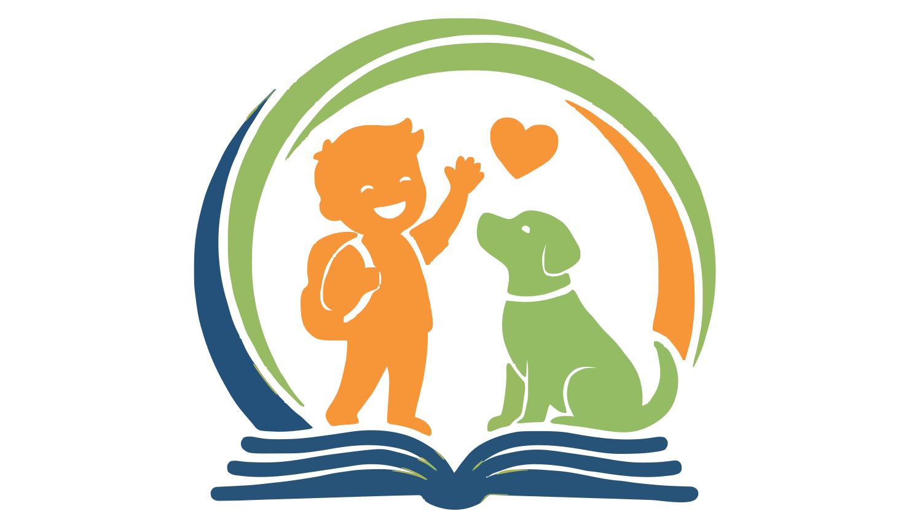

Diagnóstico Pedagógico
Evaluación personalizada de necesidades educativas y estilos de aprendizaje para diseñar rutas de apoyo claras junto a familias y docentes.
Realizamos diagnósticos pedagógicos, intervención terapéutica y capacitación para niños y jóvenes con necesidades educativas y discapacidad en zonas vulnerables de Colombia.
“Cuestión de actitud”

Centro de Diagnóstico de Necesidades Educativas
NIT 900.773.102-4 • Bogotá

Nuestro símbolo representa a un niño feliz acompañado por su perro de terapia, parados sobre el libro abierto de la educación y protegidos por una comunidad donde nadie queda por fuera.
La Fundación Centro de Diagnóstico de Necesidades Educativas (CEDINE) es una entidad sin ánimo de lucro constituida en Bogotá que acompaña a niños, jóvenes y familias en condiciones de vulnerabilidad.
Creemos en las personas primero: no nos enfocamos en etiquetas, sino en descubrir cómo aprende cada niño, brindándole herramientas pedagógicas y terapéuticas integrales para su verdadera inclusión social y escolar.
Combinamos el acompañamiento pedagógico especializado con terapias asistidas que estimulan la confianza, el movimiento y el aprendizaje.
Evaluación personalizada de necesidades educativas y estilos de aprendizaje para diseñar rutas de apoyo claras junto a familias y docentes.
Terapia asistida con perros entrenados que fortalecen el vínculo afectivo, reducen la ansiedad y estimulan la comunicación y confianza.
Actividades físicas y sensoriales en entornos abiertos para potenciar la coordinación, el equilibrio, la autonomía y la alegría del juego.
Estimulación neuromuscular y relajación en el agua guiada por profesionales, favoreciendo la movilidad y el bienestar integral.
“Cuestión de actitud”
Somos una fundación pequeña con un propósito gigante. Cada aporte económico, alianza empresarial o voluntariado se destina directamente a sesiones terapéuticas, materiales pedagógicos y cuidado de nuestros perros de terapia.
Entidad Sin Ánimo de Lucro • NIT 900.773.102-4